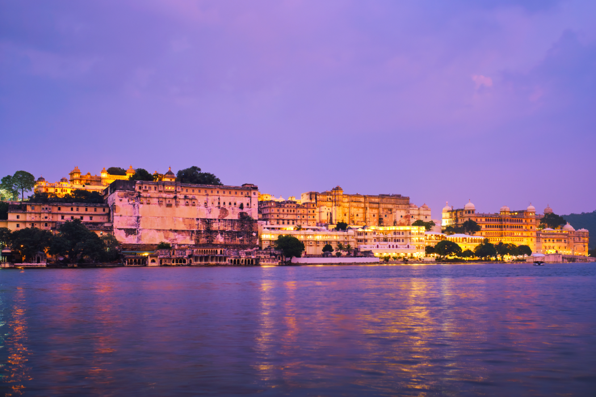
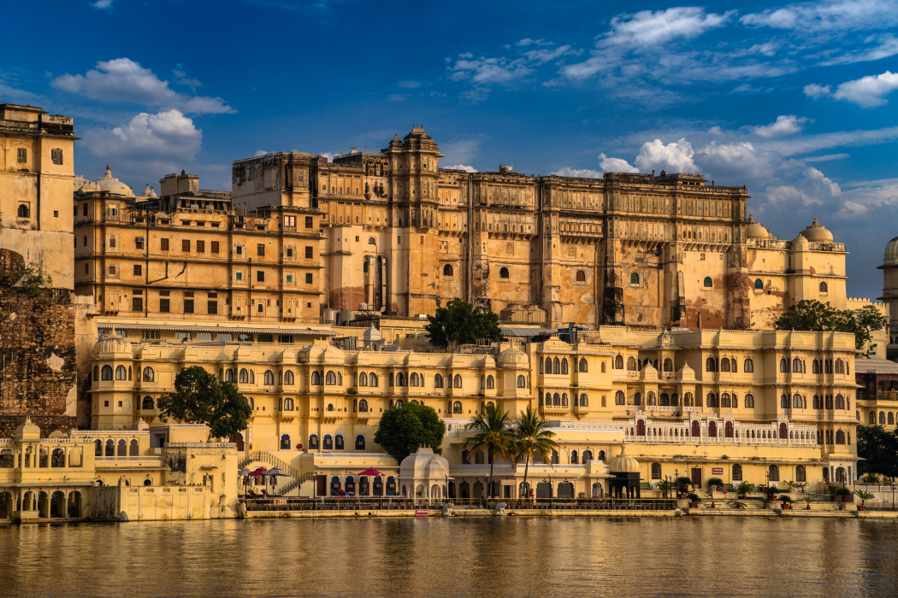
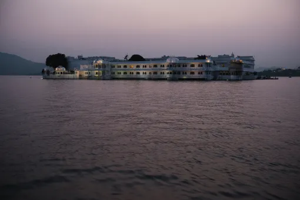
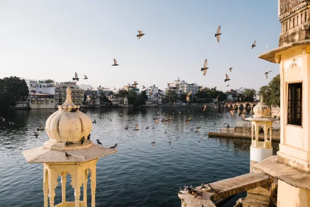

Places
How to Choose the Best Place to Stay in Udaipur for Your Travel Style
While the City of Lakes is famous for its palaces, lakes, heritage architecture, and cultural charm, every neighborhood offers a slightly different experience. Some travelers want to wake up to views of Lake Pichola, while others prefer quiet surroundings near Fateh Sagar Lake. Some seek luxurious palace-style hospitality, while others look for authentic heritage stays that reflect the city's royal history.
With so many hotels in Udaipur to choose from, finding the right one can feel overwhelming. The key is to match your accommodation with your travel style. This guide will help you decide where to stay and what type of hotel in Udaipur best suits your needs.
Step 1: Identify the Purpose of Your Trip
Before comparing hotels, ask yourself a simple question:
Why are you visiting Udaipur?
Your answer will influence the type of accommodation that works best for you.
The clearer your priorities, the easier it becomes to narrow your options.
First-Time Visitors
Prioritize: Central location, Easy sightseeing access, Proximity to major attractions
Couples
Look for: Romantic settings, Boutique hotels, Lake views, Rooftop dining
Families
Consider: Spacious rooms, Convenient transportation, Family-friendly amenities
Heritage Travelers
Focus on: Historic properties, Traditional architecture, Authentic cultural experiences
Step 2: Choose the Right Area in Udaipur
One of the most important decisions is selecting the right neighborhood.

Lake Pichola Area
The area around Lake Pichola is one of the most popular locations in the city.
Best For: Couples, First-time visitors, Photography enthusiasts
Advantages: Stunning lake views, Easy access to attractions, Vibrant atmosphere, Rooftop restaurants

Old City
The historic heart of Udaipur offers an immersive cultural experience.
Best For: Heritage lovers, International travelers, Boutique stay seekers
Advantages: Historic atmosphere, Walkable attractions, Traditional markets, Heritage architecture
Fateh Sagar Lake Area
Fateh Sagar Lake offers a more relaxed environment.
Best For: Families, Long stays, Leisure travelers
Advantages: Scenic surroundings, Less congestion, Peaceful atmosphere

Outskirts & Resort Areas
Suitable for travelers seeking privacy and resort facilities.
Best For: Luxury vacations, Wellness retreats, Relaxation-focused trips
Step 3: Understand Different Types of Hotels in Udaipur
Not all accommodations provide the same experience.
Heritage Hotels
Heritage hotels are restored palaces, mansions, and historic havelis. Why Travelers Choose Them: Authentic architecture, Cultural immersion, Historic atmosphere, Unique character. A heritage hotel in Udaipur often allows guests to experience the city's royal legacy firsthand.
Boutique Hotels
Boutique hotels focus on personalized experiences rather than scale. Key Features: Smaller property size, Individual design, Personalized service, Local character. Many travelers today prefer boutique hotels in Udaipur because they provide a more intimate and memorable stay.
Luxury Hotels
Luxury properties typically offer: Premium facilities, Spa services, Fine dining, Concierge support. These are ideal for travelers seeking comfort and convenience.
Budget Hotels
Best suited for: Short stays, Budget-conscious travelers, Sightseeing-focused trips
Atmosphere
Do you prefer a heritage ambiance or a contemporary setting?
Hospitality
Is personalized service important to you?
Dining
Will you spend time at the property, or only use it as a base for sightseeing?
Cultural Experience
Would you like your stay to reflect Rajasthan's traditions and architecture?
Step 4: Think Beyond the Room
Many travelers make the mistake of comparing hotels based only on room size and pricing.
The overall experience often matters more.
Consider:
These factors often influence satisfaction more than room categories alone.

Step 5: Consider Your Sightseeing Plans
The best hotel location depends on how you plan to explore Udaipur.
If You Want to Visit:
- City Palace
- Jagdish Temple
- Bagore Ki Haveli
- Gangaur Ghat
Staying near the Old City or Lake Pichola can save considerable travel time.
If You Prefer:
- Scenic drives
- Relaxed surroundings
- Family outings
Fateh Sagar Lake may be a better choice.
Why Many Travelers Prefer Heritage Boutique Hotels
Modern travelers increasingly seek experiences rather than just accommodation.
This is one reason heritage boutique hotels have become so popular.
Rather than feeling like a standard hotel, they become part of the travel experience itself.
Authentic architecture
Cultural storytelling
Personalized attention
Local design influences
A stronger connection to the destination


A Heritage Stay Experience in Udaipur
For travelers interested in experiencing traditional Mewari hospitality, heritage boutique hotels offer a unique alternative to large commercial properties.
For example, Kaladwas Lal Haveli combines:
- Traditional Mewari architecture
- Heritage-inspired interiors
- Personalized hospitality
- Cultural atmosphere
While every traveler's needs are different, boutique heritage stays can be particularly appealing for visitors who want their accommodation to reflect the spirit of Udaipur itself.
Book Your Stay View Rooms
Common Mistakes to Avoid When Booking Hotels in Udaipur
Choosing Location Based Only on Price
A lower room rate may result in longer daily travel times.
Ignoring Property Style
A heritage hotel and a modern business hotel offer completely different experiences.
Overlooking Reviews About Service
Hospitality quality can significantly impact your stay.
Booking Too Late in Peak Season
Hotels in Udaipur fill quickly between October and March.
Quick Recommendations by Traveler Type
First-Time Visitors
Heritage Hotel Near Old City
Couples
Boutique Hotel Near Lake Pichola
Families
Hotel Near Fateh Sagar Lake
Luxury Travelers
Palace Hotel or Luxury Boutique Stay
Heritage Enthusiasts
Heritage Haveli
International Visitors
Boutique Heritage Hotel